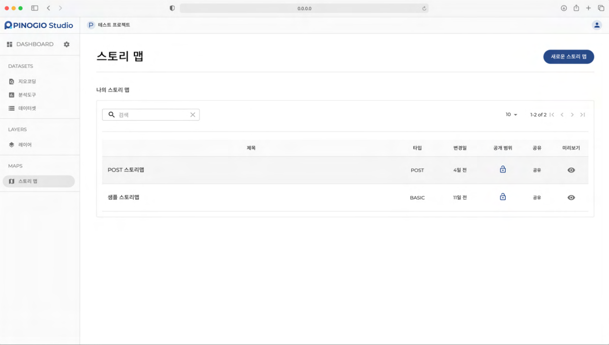
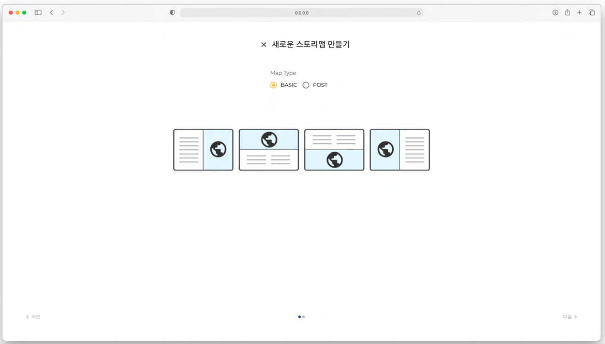

스토리맵
스토리맵 개요
스토리맵 스토리맵은 프로젝트의 데이터셋을 사용하여 공간분석을 거쳐 생성된 레이어로 만들어지는 지도입니다. 스토리맵의 내용은 사용자의 작성내용에 따라서 수많은 용도로 사용될 수 있습니다.
기본형(BASIC) 스토리맵 기본형 스토리맵은 가장 기초적인 스토리맵 입니다. 스토리맵 페이지 제목과 내용(콘텐츠) 를 담고있는 내용면과 사용되는 데이터를 보여줄 지도면으로 구성되어 있습니다.
포스트형(POST) 스토리맵 포스트형 스토리맵은 블로그 포스트와 유사한 구성의 스토리맵 입니다. 사용자가 원하는 위치에 내용(콘텐츠) 를 입력할 수 있으며, 구분선과 이미지 맵(지도) 를 추가할 수 있습니다.
스토리맵 만들기
기본형 스토리맵 만들기
스토리맵 페이지에서 새로운 스토리 맵 을 클릭합니다.
스토리맵의 맵 타입의 기본값은 기 BASIC( ) , 4 본형 이며 개의 템플릿 중 한 개를 선택하고 다음 을 클릭합니다.
스토리맵 제목 입력란에 스토리맵 제목을 입력합니다.
스토리맵 설명 입력란에 스토리맵에 대한 설명을 입력합니다.
‘스토리맵 공개범위 선택란에서 스토리맵의 공개범위를 선택합니다.
완료 를 클릭하여 새로운 스토리맵을 생성합니다.
포스트형 스토리맵 만들기
스토리맵 페이지에서 새로운 스토리 맵 을 클릭합니다.
스토리맵의 맵 타입을 로 POST 선택 후 다음 을 클릭합니다.
스토리맵 제목 입력란에 스토리맵 제목을 입력합니다.
스토리맵 설명 입력란에 스토리맵에 대한 설명을 입력합니다.
스토리맵 공개범위 선택란에서 스토리맵의 공개범위를 선택합니다.
완료를 클릭하여 새로운 스토리맵을 생성합니다.
스토리맵 검색하기
경고
여기서부터는 현재 작성 중입니다.